/math-adf426d5254dc8146568832bc46cbc29.png "\alpha\!") :有意水準
:有意水準
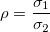
とする片側検出力:
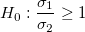
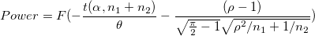
片側検出力:
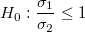
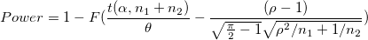
両側検出力:
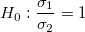
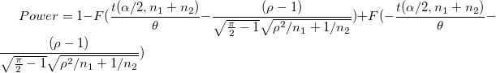
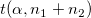
: 自由度n1+n2-2のt分布における上側パーセンタイル値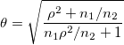
F: 標準正規分布の累積分布関数
とする
片側検出力:
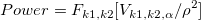
片側検出力:
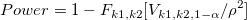
両側検出力:
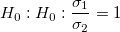
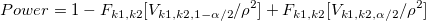
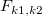
：自由度k1 および k2のF分布の分布関数。ここで、k1 および k2 = n -1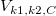
:自由度k1 および k2のF分布について、Cにおける逆累積分布関数（逆CDF）の値:有意水準
Origin は、検出力の式を使用した反復アルゴリズムを使用します。各反復で試行標本サイズに対する検出力を評価し、整数の標本サイズに対応する検出力のうち、目標値より大きく、かつ目標値に最も近い値に達した時点で反復を終了します。